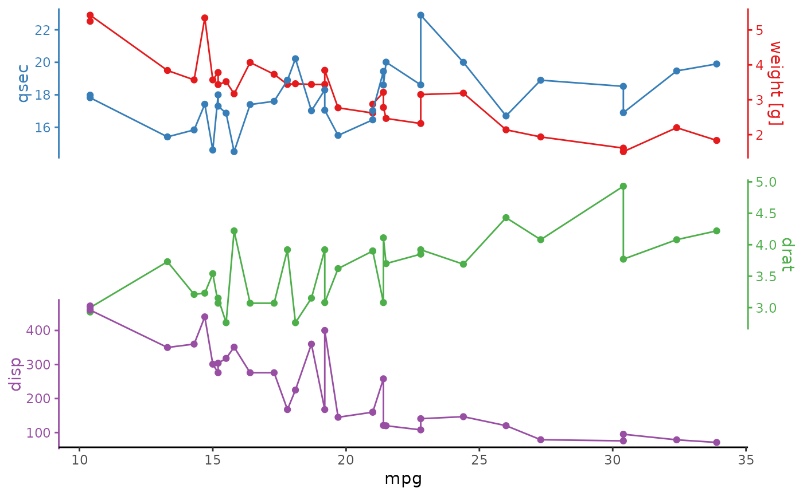

Stack a ggplot
ggstackplot.RdUse ggstackplot() to generate a stackplot. If you need more fine control, use prepare_stackplot() and assemble_stackplot() individually.
ggstackplot(
data,
x,
y,
remove_na = TRUE,
color = NA,
palette = NA,
both_axes = FALSE,
alternate_axes = TRUE,
switch_axes = FALSE,
overlap = 0,
simplify_shared_axis = TRUE,
shared_axis_size = 0.2,
template = ggplot() + geom_line() + geom_point() + theme_stackplot(),
add = list(),
debug = FALSE
)
prepare_stackplot(
data,
x,
y,
remove_na = TRUE,
color = NA,
palette = NA,
both_axes = FALSE,
alternate_axes = TRUE,
switch_axes = FALSE,
template = ggplot() + geom_line() + geom_point() + theme_stackplot(),
add = list(),
debug = FALSE
)
assemble_stackplot(
prepared_stackplot,
overlap = 0,
simplify_shared_axis = TRUE,
shared_axis_size = 0.15,
debug = FALSE
)Arguments
- data
the data frame to plot
- x
the x variable(s) to plot, accepts
dplyr::select()syntax. The order of variables is plotted from left to right (if multiplex).- y
the y variable(s) to plot, accepts
dplyr::select()syntax. The order of variables in plotted from top to bottom (if multipley).- remove_na
whether to remove
NAvalues in the x/y plot, setting this toFALSEcan lead to unintended side-effects for interrupted lines so check your plot carefully if you change this- color
which color to make the plots (also sets the plotwide color and fill aesthetics, overwrite in individual geoms in the
templateto overwrite this aesthetic), either one value for or one color per variable. PickNAto not set colors (in case you want to use them yourself in the aesthetics).- palette
which color to make the plots defined with an RColorBrewer palette (
RColorBrewer::display.brewer.all()). You can only usecolororpaletteparameter, not both.- both_axes
whether to have the stacked axes on both sides (overrides alternate_axes and switch_axes)
- alternate_axes
whether to alternate the sides on which the stacked axes are plotted
- switch_axes
whether to switch the stacked axes. Not switching means the first plot in the lower left corner is always arranged like a regular ggplot with the y axis on the left and the x axis on the bottom (even if
alternate_axes = TRUE). Settingswitch_axes = TRUE, leads to the opposite, i.e. first plot in the lower corner has the variable axis on the other side (secondary in ggplot terms).- overlap
fractional overlap between adjacent plots. The max of 1 means plots are perfectly overlaid. The min of 0 means there is no overlap. If providing multiple values, must be 1 less than the number of stacked plots (since it's describing the overlap/gap between adjacent plots). By default there is no overlap between plots
whether to simplify the shared axis to only be on the last plot (+ first plot if a duplicate secondary axis is set)
if simplify_shared_axes is true, this determines the size of the shared axis relative to the size of a single plot
- template
a template plot (ggplot object) to use for the stacked plots
- add
a list of ggplot component calls to add to specific panel plots, either by panel variable name (named list) or index (unnamed list)
- debug
![[Experimental]](figures/lifecycle-experimental.svg) debug flag to print the stackplot tibble and gtable intermediates
debug flag to print the stackplot tibble and gtable intermediates- prepared_stackplot
a nested data frame, the output from
prepare_stackplot()
Value
ggstackplot() returns a ggplot with overlayed plot layers
prepare_stackplot() returns a tibble with all plot components
assemble_stackplot() returns a ggplot with overlayed plot layers
Details
ggstackplot() stacks a ggplot template with the provided data and parameters. It returns a plot object generated by cowplot::plot_grid()).
prepare_stackplot() is usually not called directly but can be used to assemble the parts of a stackplot first and then look at them or edit them individually before combining them with assemble_stackplot()]. Returns a nested data frame with all stacked variables (.var), their plot configuration, data, plot object, and theme object.
assemble_stackplot() is usually not called directly but can be used to manually combine a stackplot tibble (typically created by prepare_stockplot()). Returns a plot object generated by cowplot::plot_grid()).
Examples
# 1 step stackplot (most common use)
mtcars |>
ggstackplot(
x = mpg,
y = c(`weight [g]` = wt, qsec, drat, disp),
palette = "Set1",
overlap = c(1, 0, 0.3)
)

# 2 step stackplot
mtcars |>
prepare_stackplot(
x = mpg,
y = c(`weight [g]` = wt, qsec, drat, disp),
palette = "Set1"
) |>
assemble_stackplot(overlap = c(1, 0, 0.3))